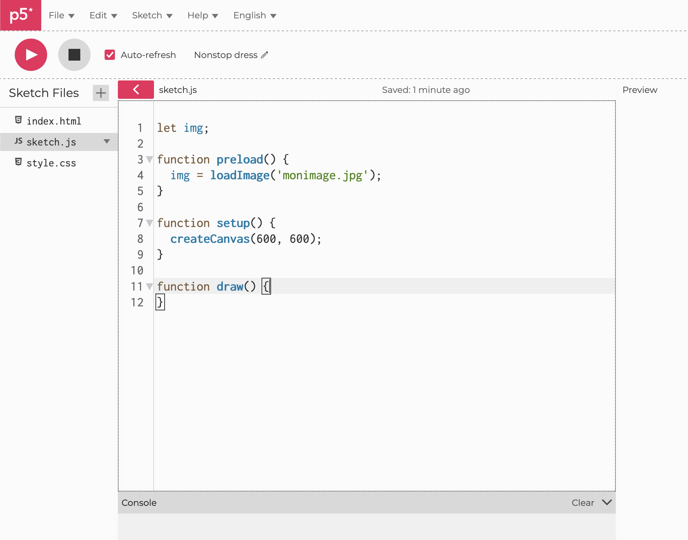
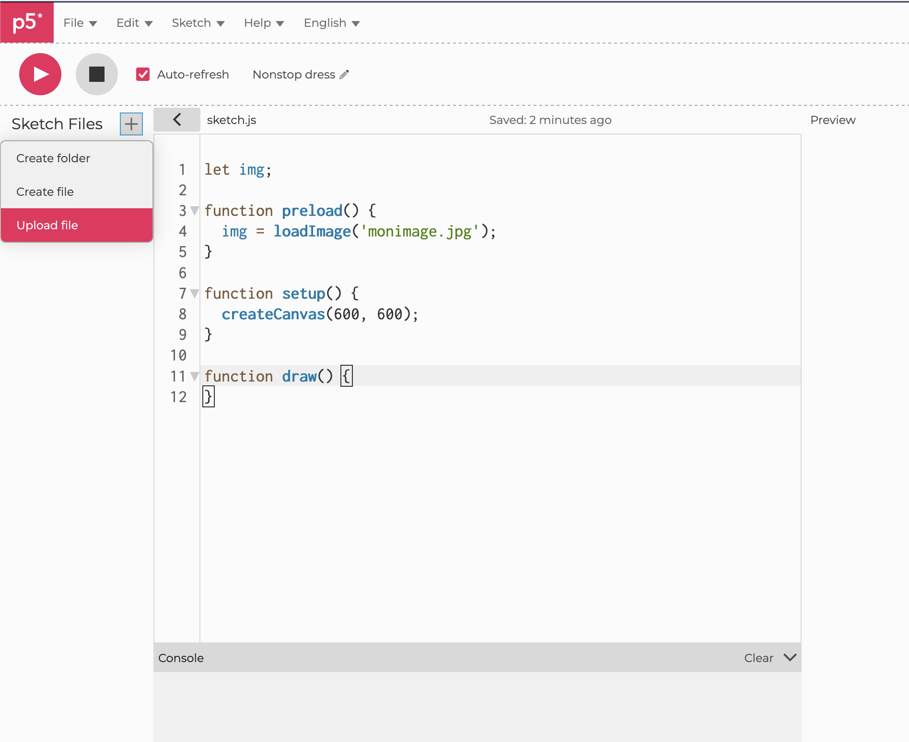

Documentation
Images
Une image = un tableau de pixels.
Charger et afficher
let img;
async function setup() {
createCanvas(600, 600);
img = await loadImage('image.png');
}
function draw() {
image(img, 0, 0); // taille d'origine
image(img, 0, 0, width, height); // étirée au canvas
image(img, 100, 100, 200, 200); // à une position et une taille données
}Dans l'éditeur en ligne, déposez le fichier dans le dossier du sketch (panneau de gauche) et référencez-le par son nom.


Conserver les proportions
let ratio = img.width / img.height;
let h = height;
let w = h * ratio;
image(img, (width - w) / 2, 0, w, h); // centrée, non déforméeimg.widthlargeur en pixels de l'image sourceimg.heighthauteur en pixelsimg.resize(w, h)redimensionne définitivement (0 = auto)imageMode(CENTER)positionne par le centretint(255, 128)teinte ou opacité appliquée à l'imagenoTint()annule la teinteLire un pixel
get() renvoie la couleur d'un pixel.
img.loadPixels(); // obligatoire
let c = img.get(mouseX, mouseY);
fill(c);
circle(mouseX, mouseY, 50)Échantillonner
let img;
let step = 12;
async function setup() {
img = await loadImage('image.png');
createCanvas(img.width, img.height);
img.loadPixels();
noLoop();
}
function draw() {
background(255);
noStroke();
fill(0);
for (let x = 0; x < width; x += step) {
for (let y = 0; y < height; y += step) {
let c = img.get(x, y);
let luminosite = (c[0] + c[1] + c[2]) / 3; // moyenne des trois canaux
let taille = map(luminosite, 0, 255, step, 0); // sombre = grand point
circle(x, y, taille);
}
}
}Filtres
Les filtres s'appliquent après avoir dessiné l'image.
img.filter(GRAY);
img.filter(INVERT);
img.filter(POSTERIZE, 4);
img.filter(BLUR, 3);
img.filter(THRESHOLD, 0.5);Flux vidéo
Une capture webcam se manipule exactement comme une image, à ceci près qu'elle change à chaque frame.
let capture;
function setup() {
createCanvas(600, 400);
capture = createCapture(VIDEO);
capture.hide(); // cacher l'élément video du navigateur
}
function draw() {
image(capture, 0, 0, width, width * capture.height / capture.width);
filter(INVERT);
}